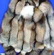
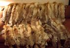

Отмачивание. Сухие шкурки, растянутые на правилках (обтесанный кусок доски), погрузить в раствор поваренной соли (100 гр. на 1 л воды) при температуре не выше +25°С на сутки, чтобы они размякли. Затем тупым ножом от огузка к голове подчистить неудаленные пленки жира и мышц.
Выделка. При выделке шкурки должны быть мехом внутрь. На 1 л воды при температуре 18-20°С (не более 25°С) добавляется 2 ст. ложки уксусной эссенции (70%) или ледяной уксусной кислоты (99,8%) и 4 ст. ложки (без верха) поваренной соли (коэффициент 1:7 или 1:10, т. е. на 1 часть веса шкурок надо в 7-10 раз больше раствора). В продаже имеется столовый уксус (9%). Его надо брать в 10 раз больше, т. е. 20 ложек.
Шкурки в растворе выдерживаются 14 часов до появления "сушинки". Для обнаружения последней шкурка в ее наиболее толстом месте складывается в 4 раза, сильно сдавливается пальцами, расправляется и рассматривается (должен быть хорошо виден белый крест). Второй способ - сделать крест на шкурке ногтем большого пальца, он не должен исчезнуть. Если же крест не образуется, процедуру выделки следует удлинить. Затем шкурку отжимают, не выкручивая.
Выдержка. Сворачиваем каждую шкурку калачиком и помещаем в целлофановый мешочек на сутки или укладываем шкурки мездра к мездре, накладываем сверху груз, прикрываем пленкой.
Промывка. Шкурки промываем в мыльном растворе 5 раз. Он приготавливается так: в воде при температуре +25"С растворяется мыло, или стиральный порошок "Лотос" или другой порошок для мытья шерсти (5 гр. на 1 л воды) до образования пены. Воду для раствора лучше брать снеговую или прокипятить водопроводную, дав ей отстояться, чтобы осел осадок. Тщательно прополаскиваем в воде.
Просыхание. Лучше эту операцию проводить на правилках в тени (подходящее место - сарай). Однако можно ограничиться прикреплением расправленных и вытянутых во всех направлениях шкурок прищепками к бельевой веревке. Важно шкурку не пересушить и снять еще влажноватой.
 Теребление и разминание шкурок. Эта операция довольно трудоемкая (особенно для шкурок с толстой кожей). Шкурку растягивают вдоль и поперек, трут о край лавки или табуретки, взяв обеими руками у головы и огузка (вверх-вниз и т. д.), тщательно проминают и растирают все места, особенно у лапок и головки. Слегка протирают мездру пемзой или куском кирпича (главным образом те места, где кожа толстая или где имеются пленки либо где хуже выделка).
 Жировка. В небольшом количестве воды разводят 100 гр. мыла, добавляют 100 гр. рыбьего жира (бывает в аптеках) и 15-20 капель нашатырного спирта, все хорошо перемешивают и добавляют воду до 1 л. Кисточкой или ваткой смачивают раствором мездру, затем изделие складывают пополам мездра к мездре и выдерживают под пленкой 3-4 часа. После этого шкурки высушиваются при комнатной температуре, тщательно разминаются и растягиваются в разных направлениях. Шкурка должна быть мягкой и пластичной. Если этого нет, то жировку следует провести повторно. Если при жировке запачкается мех. его следует протереть бензином и расчесать гребнем.
 Таким образом, в этом простом методе выделки шкурок опущена такая операция, как дубление (коагуляция белка кожи шкурки под действием тех или иных веществ). Эту роль выполняет рыбий жир, содержащий естественные дубильные вещества. На Байкале, на побережье Охотского моря для этой цели используют любой жир морских и водных животных (тюлений, китовый).
Таким образом, в этом простом методе выделки шкурок опущена такая операция, как дубление (коагуляция белка кожи шкурки под действием тех или иных веществ). Эту роль выполняет рыбий жир, содержащий естественные дубильные вещества. На Байкале, на побережье Охотского моря для этой цели используют любой жир морских и водных животных (тюлений, китовый).Если же рыбий жир отсутствует в продаже, то перед жировкой надо обязательно ввести операцию дубления, иначе шкурка будет непрочной. В качестве дубителей используется кора растущей лиственницы, ивы, а в нашей зоне - дуба. Растительное сырье кипятится до средне-коричневого цвета, раствор процеживается и охлаждается до комнатной температуры (-Н8и-20°). В него помещаются шкурки на 24 часа так. чтобы они в нем плавали и были покрыты раствором. При этом светлый мех окрашивается в коричневый цвет разной степени интенсивности. Шкурки выжимают, не выкручивая, протирают сухим мхом или тряпкой, просушивают. Если вы не хотите, чтобы мех окрасился, то дубление надо проводить не окуночным методом, а помазком по мездре, не касаясь волоса, промазывая мездру 2-3 раза.
Для дубления можно использовать и химические средства. Это - хромовые квасцы (4 гр.) и соль (40-60 гр.), разведенные в литре воды. Вместо хромовых квасцов можно использовать алюмокалиевые квасцы (12 гр. на литр), танин (5 гр. на 1 л). Последний продается в аптеках. Шкурка промазывается 2 раза по мездре помазком.
После любого способа дубления проводится жировка следующим методом: 7 желтков смешать со 100 гр. глицерина и 2 столовыми ложками соли, размешать тщательно в 1 л воды. Провести жировку помазком или щеткой (для больших шкур), сложить шкурки мездра к мездре, прикрыть пленкой и оставить на 24 часа, затем размять до мягкости.
Обновление лежавших выделанных шкурок или кусков меха от старых изделий.
В процессе хранения выделанных шкурок или меховых изделий кожевенная ткань грубеет, теряет свои пластические свойства (особенно в домашних условиях при сильной сухости теплого воздуха). Для этого мездру шкурки надо осторожно протереть ваткой, смоченной в растворе (1 стол, ложка уксусной эссенции и 50 гр. соли в 1 л воды). Старые, разрезанные по брюшку шкурки полезно растянуть на тонких гвоздях, как это делается при раскрое шапки. После просушки (до слегка влажного состояния) провести жировку и осторожное разминание, чтобы шкурка не лопнула.
КАК ШЬЮТ ШАПКИ-УШАНКИ СИБИРСКИЕ ОХОТНИКИ
Изготовление болванки. (Применяется для натягивания почти готового изделия). Взять трехлитровую банку, перевернуть ее вниз горлышком, накрыть тонкой полиэтиленовой пленкой. Развести клейстер из муки или крахмала и, смазывая им куски газеты, облепить множеством слоев половину банки до требуемых размеров по объему и высоте. Измерить предварительный объем вашей головы с прибавкой 0,5-1 см на ватин и подкладку в зависимости от их толщины. Высоту шапки определить по желанию или по старой шапке. После высыхания болванку из "папье-маше" можно оставить либо на банке, либо снять вместе с пленкой.
Растяжка и раскрой шкурки. Шкурка разрезается со стороны мездры острой бритвой по брюшку, мездра слегка смачивается чистой или слегка подсоленной водой помазком и сразу же, равномерно растягивая ее во все стороны, аккуратно прибивается по краям длинными (3-3,5 см) и тонкими гвоздями к ровной доске ворсом вниз. Затем плоским ножом, поместив его между ворсом и доской, шкурка приподнимается на гвоздях, чтобы волос не прижался, а повис свободно. Это сделает будущую шапку пушистой.
Когда шкурка подсохнет, на мездру наносят детали выкройки, которые предварительно вырезаются и обводятся на шкурке цветным карандашом. Следует следить за направлением ворса: на лицевом козырьке, на ушках и на передней половине колпака он должен идти снизу вверх, на задней половине колпака и на подлицевом козырьке - сверху вниз.
Детали кроя вырезаются острой бритвой, прибавляя на швы 0,3-0,5 см. Мех сшивается с изнанки частыми стежками через край или петельным швом, не захватывая волос и заправляя его внутрь.
Пошив. Шитье начинается с колпака. По краю колпака пришивают кромку из полоски плотной ткани шириной 3 см или тесьму. Сшейте ушки, вставив в их концы тесьму. Сшейте козырек. В ушки и козырек разумно вставить твердую прокладку из плотной ткани (смочив предварительно ее водой, натерев мылом и разгладив).
Прокладку раскраивают чуть меньше самих деталей, ее прикрепляют крупными стежками внутри ушек и козырька, не прокалывая мездру насквозь. Затем сшитые части вывертываются, швы расправляются, чтобы лицевые детали обогнули подлицевые и швы не были видны снаружи. Подлицевые части козырька и ушек приметайте к колпаку через край.
Накройте болванку куском пленки, смочите колпак шапки и швы мокрой ваткой, натяните шапку на болванку, расправьте все детали, заправив ушки вверх и связав их шнурком, прочешите шапку по ворсу гребнем, дайте подсохнуть.
Чтобы шапка сохраняла форму, внутрь вставляют прокладку ,из ватмана, выкроив ее по размеру и выкройке колпака. Простегивание дольника (долевая деталь) проводят либо между слоями накрахмаленной марли (если подкладка вшивается отдельно), либо сразу простегивают ватин между слоем марли и прокладкой. При этом "дольник" шапки простегивается вертикальными швами, а донышко либо круговыми, либо в клеточку. Обе детали сшиваются, кромка швов обрезается, расправляется и слегка пришивается к подстежке, чтобы она не выпирала наружу (особенно если мех тонкий). Подстежка пришивается сначала крупными стежками к краям донышка (чтобы не обвисла), а затем - потайным швом к краям козырька, ушек, дольника.
Приведенные выкройки рассчитаны на ушанку 59-60-го размеров. При уменьшении размера надо помнить, что основание колпака - это размер вашей головы плюс 2 см. Соответственно размерам вашей головы уменьшите размеры дольника. Ушки можно лишь немного уменьшить, а козырек можно оставить тем же.
Уникальные издания.
- 01. СУПЕРТЕЛО! Уникальная методика развития сильного тела без тренажеров и "химии"!
- 02. НАПИТКИ ЧЕМПИОНОВ. Рецепты приготовления протеиновых коктейлей для наращивания мышц
- 03. ПОДРАСТИ - ЭТО ЗДОРОВО! Уникальное практическое пособие по ускоренному увеличению роста в любом возрасте
- 04. ПОХУДЕТЬ - НЕ ПРОБЛЕМА! Эффективная методика похудения без голодной диеты и упражнений
- 05. ПРОСТИТЕСЬ С ЖИВОТИКОМ! Как "убрать" растолстевший живот
- 06. СУПЕРПАМЯТЬ. Самая эффективная методика развития суперпамяти
- 07. ПОЛИГЛОТ. Методическое пособие по изучению любых иностранных языков
- 08. БЫСТРОЕ ЧТЕНИЕ. Как увеличить скорость чтения и запоминать прочитанное
- 09. ДЛЯ ВАШИХ ГЛАЗ. Оригинальная методика исправления дефектов зрения
- 10. ИЗБАВЬТЕСЬ ОТ ХУДОБЫ! Сборник практических рекомендаций для всех, кто хочет излечить худобу
- 11. ЭТО УНИКАЛЬНО! Рецептура приготовления универсального народного средства от многих болезней
- 12. ЗДОРОВЫЕ ЗУБЫ. Уникальная методика естественного наращивания и лечения зубов без пломбирования
- 13. СПОКОЙНЫЙ СОН. Как избавиться от храпа за две недели!
- 14. АЛКОГОЛИЗМ - БЕДА. Простые методы лечения алкоголизма средствами народной медицины
- 15. КУРЕНИЕ - ВРЕД. Надежная методика для тех, кто решил бросить курить раз и навсегда!
- 16. ВЫ НЕОТРАЗИМЫ! Методика безболезненного и бесследного удаления волос с тела
- 17. ВОСХИТИТЕЛЬНЫЕ ВОЛОСЫ! Рецепты приготовления эффективных средств для ухода за волосами 20
- 18. САМОЛЕЧЕНИЕ. Рецепты лечения заболеваний на основе опыта народной медицины
- 19. РЕЦЕПТЫ КРАСОТЫ. Простые рецепты приготовления косметических средств
- 20. МУЖСКАЯ СИЛА. Проверенная методика восстановления потенции
- 21. СЕКРЕТ ФАРАОНА. Рецепт эликсира для усиления половой функции организма
- 22. ИДЕАЛЬНЫЙ БЮСТ! Как сохранить грудь красивой и увеличить ее объем всего за пару месяцев!
- 23. ОСИНАЯ ТАЛИЯ. Комплекс эффективных упражнений для уменьшения окружности талии
- 24. СТРОЙНАЯ И КРАСИВАЯ! Полезные упражнения для современной женщины!
- 25. ЛЮБВИ И СЧАСТЬЯ! Как сохранить свою молодость и красоту в любом возрасте
- 26. СЕКС - МАГИЯ. Волшебное искусство очарования и привораживания
- 27. УДИВИТЕЛЬНОЕ РЯДОМ! Расшифрованный ключ и таблицы Нострадамуса для познания своей судьбы
- 28. ВТОРОЕ ДЫХАНИЕ. Как развить в себе экстрасенсорные способности и получать энергию из космоса
- 29. ГАРМОНИЯ РАЗУМА. Развитие и тренировка телепатических способностей и ясновидения
- 30. НАРОДНАЯ МУДРОСТЬ. Как лечить порчу, сглаз, испуг
- 31. СИЛА ДУХА. Как развить смелость и уверенность в себе
- 32. НОВЫЕ ТЕЛЕКАНАЛЫ - В КАЖДЫЙ ДОМ! Руководство по сборке простых телеантенн для приема новых телеканалов
- 33. БЕЗ ПОМЕХ И ИСКАЖЕНИЙ. Как собрать антенный усилитель для приема удаленных телесигналов
- 34. КИНЕСКОП. Способ восстановления "севшего" кинескопа
- 35. ЗАЩИТНИК. Технология изготовления карманного электрошокера
- 36. ШПИОН. Как собрать устройство для прослушивания помещений и автомобилей
- 37. ОХРАННИК. Руководство по изготовлению универсального радиоохранного устройства
- 38. ВЕЧНАЯ ЛАМПОЧКА! Как сделать простую лампочку "вечной"!
- 39. КСЕРОКС ИЗ УВЕЛИЧИТЕЛЯ. Руководство по переделке фотоувеличителя в домашний миниксерокс
- 40. ПЕЧАТИ И ШТАМПЫ. Способы изготовления печатей и штампов
- 41. ВОЛШЕБНАЯ ЖИДКОСТЬ! Рецепты средств для удаления с бумаги печатей, штампов и записей
- 42. МЕХА, ШКУРКИ И ШАПКИ. Рекомендации опытных скорняков по выделке шкурок и шитью меховых шапок
- 43. ПОМОЩНИК МАСТЕРА. Описание изготовления сварочного аппарата на 220 В 51
- 44. ЭЛЕКТРОДЫ ДЛЯ СВАРКИ. Рецепты изготовления сварочных электродов и "термитного" карандаша
- 45. СВЕРКАЕТ И СИЯЕТ! Технология восстановления эмалированного покрытия
- 46. БЕСПЛАТНЫЙ БЕНЗИН ДЕЛАЙТЕ САМИ! Руководство по сборке аппарата для изготовления бензина из воды и бытового газа
- 47. ВМЕСТО БЕНЗИНА - КУХОННЫЙ ГАЗ! Руководство по сборке комплекта газобалонной аппаратуры для заправки любого автомобиля бытовым квартирным газом
- 48. ЭКОНОМИЯ. Народные способы экономии автотоплива
- 49. ВРАГ РЖАВЧИНЫ. Рецепт универсальной мази для удаления ржавчины
- 50. ТОНИРОВАНИЕ. Технология и рецептура тонирования стекол
- 51. ПРОВЕРЕНО В ПУТИ! Важные советы автолюбителям на случай экстремальных ситуаций
- 52. НАДО СРОЧНО ЕХАТЬ. Как управлять автомобилем в непростой ситуации
- 53. И СПИРТ, И ПИВО! Рецепты приготовления спирта без сахара и пива на любой вкус
- 54. КУЛИНАРНЫЕ РЕЦЕПТЫ! Как приготовить продукты питания
- 55. ИЗБАВЬТЕСЬ ОТ ВРЕДИТЕЛЕЙ. Эффективные составы для борьбы с насекомыми и грызунами
- 56. СУПЕРУРОЖАЙ! Методические пособия по увеличению урожая помидор, картофеля, огурцов и малины
- 57. ВСЕ О КАРТОШКЕ. Как получить урожай картофеля раньше обычного срока
- 58. КИРПИЧИ - ПОЧТИ БЕСПЛАТНО! Руководство по изготовлению красных кирпичей из доступных материалов
- 59. СТРОИТЕЛЬНЫЕ БЛОКИ. Технология изготовления строительных блоков без цемента
- 60. ПРОЧНО И ПРАКТИЧНО! Как собрать простое устройство для плетения сетки-рабицы
- 61. ЭЛЕКТРОНИКА НА РЫБАЛКЕ! Описание и схема сборки уникальной звуковой приманки для рыб
- 62. УДАЧЛИВЫЙ РЫБОЛОВ. Сборник рецептов эффективных прикормок и привад для любого вида рыбы
- 63. СЕТИ ДЕЛАЙТЕ САМИ! Чертежи ручной машинки для вязания сетей
- 64. ЗАРАБОТАЙ В ИНТЕРНЕТЕ. Работа в качестве freelancer
- 65. КОЛЛЕКЦИОНЕР. Цены на монеты России и СССР 80
- 65.1. Технология. Изготовление свеч из мыла